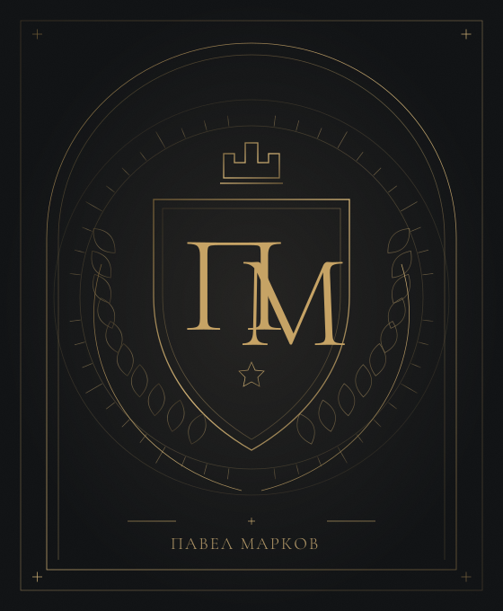
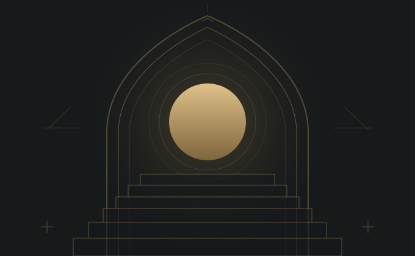
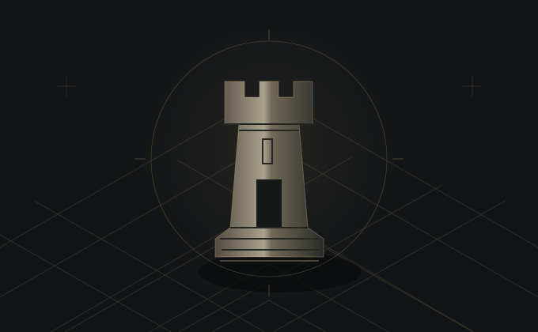
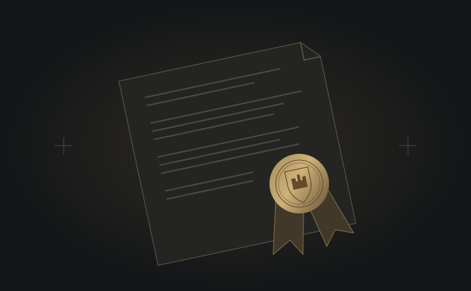

Утро — крепость.
Первый час принадлежит тебе. Не ленте, не чужим задачам, не случайности.
Закрытое мужское сообщество
Земля. Слово. Крепость.
Ты не арендатор собственной жизни.
Верни себе право быть её владельцем.
Под началом Павла Маркова
Не мотивация.
Другой способ жить.
Когда-то феодал отвечал за свою землю, крепость и слово. Сегодня мужчина легко отдаёт своё время за расписание, решения — за удобство, свободу — за привычный оклад.
Мы возвращаем не прошлое.
Мы возвращаем позицию владельца.
Первый час принадлежит тебе. Не ленте, не чужим задачам, не случайности.
Обещай осознанно. Выполняй без зрителей. На этом строится уважение к себе.
Твоя первая территория ответственности. Сила начинается с заботы, а не с насилия над собой.
Верность принципам, близким и своему делу. Не слепое подчинение — осознанный выбор.
Не происхождение определяет твоё место. А то, что ты делаешь, когда никто не требует.
Охраняй внимание. Сам решай, чему отдавать свои дни и что не заслуживает твоего часа.
Строй то, что останется после тебя.
Не только капитал. Характер, культуру, опору для близких.
Феодализм здесь — метафора самоуправления. Владеть собой, а не другими.

Один человек.
Несколько граней ответственности.
Врачебный взгляд на тело. Дисциплина соревнующегося спортсмена. Предпринимательский подход к решениям. Павел соединяет эти опыты в одну систему — управлять собой, прежде чем управлять чем-то большим.
В касте он задаёт направление обучения и объединяет людей вокруг практики. Не образ непогрешимого лидера, а высокая планка личной ответственности.
Познакомиться с системой«Не требуй от мира порядка,
Принцип системы, а не обещание результата
которого нет в твоём дне».
Сильная жизнь не держится на вдохновении.
Ей нужны опоры, которые работают и в обычный вторник.
Четыре направления. Одна целостная система.
Сон, движение, питание и восстановление. Не гонка за чужой формой, а внимательная работа со своим телом и посильной нагрузкой.
Посмотри на свою неделю: где ты укрепляешь тело, а где живёшь за счёт его запаса?
Работа с информационным шумом, границами доступности и приоритетами. Умение не только сосредоточиться, но и отказаться от лишнего.
Выбери одно важное дело. Выдели ему время без уведомлений и чужой повестки.
Связь повседневных действий с долгой стратегией. Разделение важного и срочного, ясные критерии завершения, честный разбор принятых решений.
Назови результат недели. Оставь в плане действия, которые действительно к нему ведут.
Привычки, встроенные в реальную жизнь. Понятный минимум на сложный день, среда, которая помогает, и возвращение в ритм без самоунижения.
Выбери действие, которое выполнишь даже без вдохновения. Привяжи его к привычному моменту дня.
Групповые встречи по понедельникам и четвергам. Лидерство, феодальное мышление, личная стратегия и дисциплина — через обсуждение и практику.
ОТ «МНЕ СКАЗАЛИ»К «Я РЕШИЛ»
Где ты решаешь сам, а где давно живёшь на автопилоте.
Тело, внимание и уклад, на которые можно положиться.
Перевести намерения в обязательства и законченные дела.
Перенести системный подход в карьеру, дело и отношения.
Живая групповая встреча.
Принципы, новые рамки, работа с темой.
Живая групповая встреча.
Вопросы, решения, обратная связь.
Точное время, порядок доступа и актуальный план встреч уточняются до вступления. Путь не привязан к обещанному числу недель.
Не аудитория. Не список контактов.
Люди, перед которыми твоё слово имеет вес.
Закрытое сообщество для мужчин 25–45 лет, которые строят карьеру, дело и тело. Здесь не нужно изображать победителя. Нужно быть готовым видеть реальность и действовать.
Среда без показного успехаРазговор о реальных задачах, а не о красивой версии жизни.
Обратная связь по делуДругой взгляд на решения и поддержка без снижения планки.
Общий ритм и ответственностьЖивые встречи и круг, в котором намерения становятся действиями.
Общие ценности, зрелое намерение и готовность к личной ответственности.
Не оплата покупает уважение. Его создают участие, надёжность и вклад в круг.
Не громкость голоса и не статус снаружи. Вес имеют поступки и пройденный путь.
Чтобы узнать наш подход, не обязательно сразу входить в круг. Начни с идеи, которую можно проверить в собственной жизни.
Подкаст. Видео. Короткие заметки.
Разная глубина — одна позиция.

Почему владение днём начинается раньше первого сообщения в телефоне.
Прочитать эссе
Феодальное мышление в современном мире. Без титулов и исторических иллюзий.
Разобрать идею
Между «я собираюсь» и «я сделал» находится вся твоя репутация перед собой.
Прочитать заметкуЗдесь — самостоятельные редакционные тексты о принципах касты. Не записи и не расшифровки выступлений.
Никакого тумана вокруг условий.
И несколько важных ответов —
до первого знакомства.
Каста объединяет живое групповое обучение и закрытое сообщество. Образовательная линия даёт систему, а круг помогает применять её в жизни. Это не библиотека уроков «на потом» и не обещание личного сопровождения 24/7. Индивидуальные форматы, если они доступны, обсуждаются отдельно.
Для мужчин 25–45 лет, которым близки самостоятельность, дисциплина и ответственность. Предприниматель, специалист или руководитель — должность не определяет твоё место. Важнее готовность последовательно работать над делом, телом и собственными решениями.
Нет. Входная точка у каждого своя. Не требуется демонстрировать доход, титул или идеальную форму. Требуются честность в оценке своей ситуации и готовность к посильным действиям. Работа над телом не заменяет медицинскую помощь; нагрузку важно выбирать с учётом здоровья.
В основе — живые онлайн-встречи группы по понедельникам и четвергам: темы лидерства и стратегии, вопросы участников, разбор решений и практики. Точное время, часовой пояс, доступ к материалам и возможность посмотреть пропущенную встречу нужно уточнить до вступления.
Это общий каркас работы с четырьмя опорами: телом, фокусом, задачами и привычками. Не четыре независимых марафона, а взаимосвязанная система: состояние тела влияет на внимание, внимание — на решения, привычки помогают превращать решения в устойчивую практику.
Актуальные формат, стоимость, состав участия и условия выхода обсуждаются с командой до принятия решения. На этом сайте нет оплаты и автоматической подписки. Подготовка заявки бесплатна, не создаёт обязательств и не означает автоматического вступления.
Познакомиться с идеями можно через открытые материалы. Внутри круга важны участие, уважение к чужому времени и работа со своими обязательствами. Темп бывает разным, сложные периоды нормальны. Но постоянное присутствие без намерения действовать противоречит смыслу касты.
Первый шаг — заявка и знакомство через пригласившего тебя человека. Команда и кандидат сверяют ожидания, ценности и формат. Имена участников, личные истории и содержание закрытых разговоров не предназначены для публичного распространения. Уважение к границам — часть кодекса.
Если этот взгляд тебе близок —
начнём с честного разговора.
Расскажи, кто ты и что хочешь изменить.
Он поможет познакомиться с командой.
Обсудите условия. Решение должно быть обоюдным.
Нет приглашения? Начни с открытых идей. Каста — закрытый круг, а не продажа доступа по кнопке.
Заявка подготовлена, но ещё никому не отправлена. Передай её тому, кто пригласил тебя в касту.
Передать в Телеграм